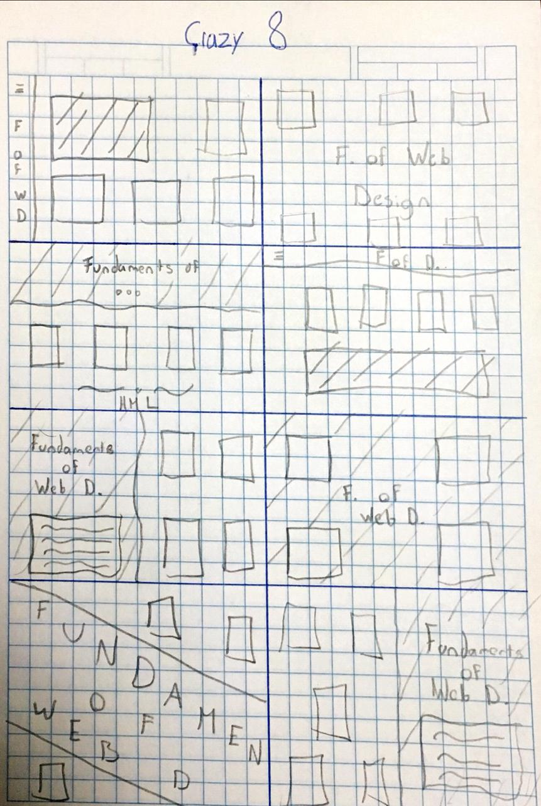
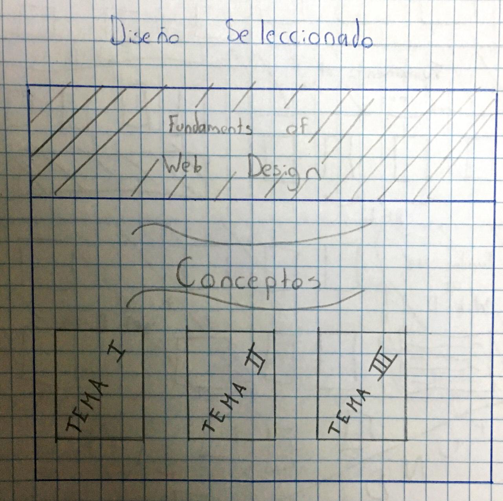

Proceso de Desarrollo:
Inicio:
Inicie a desarrollar el proyecto leyendo las instrucciones que nos fueron eviadas y repasando las actividades que ya habia realizado durante el pracial.
Diseño
Una vez comprendido lo que tenia que hacer, pregunte que es aquello que tenia que satisfacer mi produccto. Esta es la entrevista que le hice a un alumno de un semestre anterior:
¿Quien es el usruario al que está destinado el sitio web?
Las personas que quieren saber más sobre los conceptos basicos del desarrollo web.
¿Que colores me recomiendas usar?
Colores base como el negro, gris y blanco que permitan una lectura facil para el usuario.
¿Es necesario que tenga un menu?
Si, para que el usuario pueda alternar entre la pagina de inicio y la pagina del proceso.
¿Que recomiendas que use en la seccion de conceptos?
Creo que usar cards es bastante acertado, son faciles de crear y puedes agregarles botones para llevar a mas informacion.
¿Son necesarias las imagenes?
Sí, facilitan la lectura al usuario.
Despues de la entrevista, segui con los procesos de idear el diseño vistos en clase, el crazy 8.

Finalizando el Crazy8, elegi un diseño y profundice un poco en lo que queria en el
